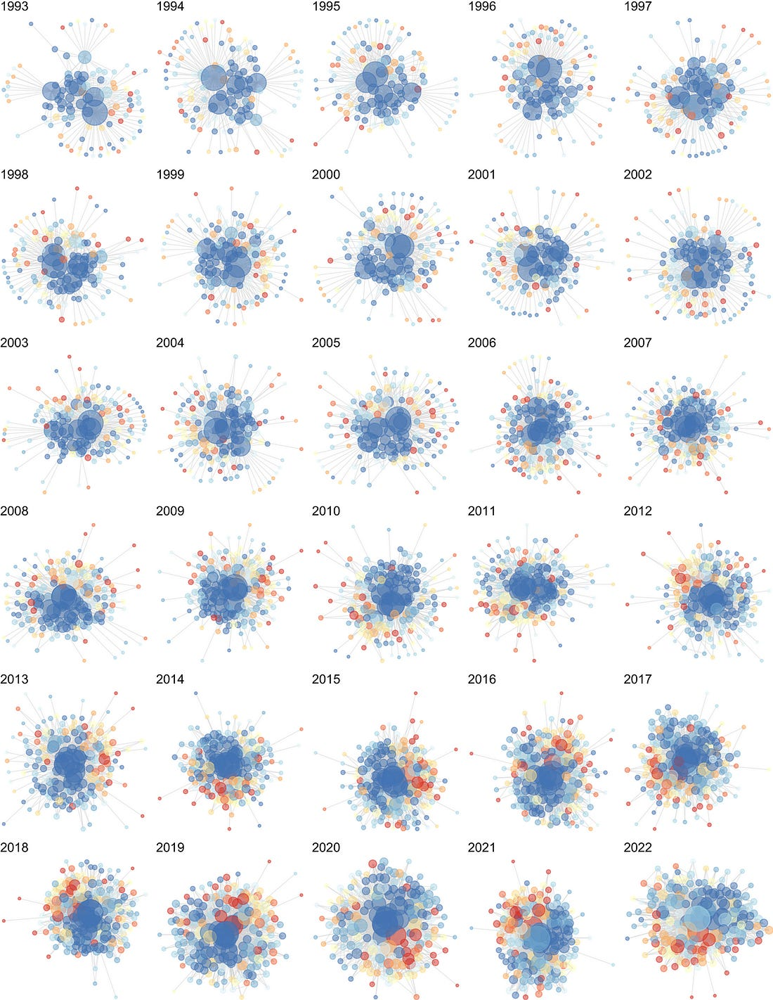
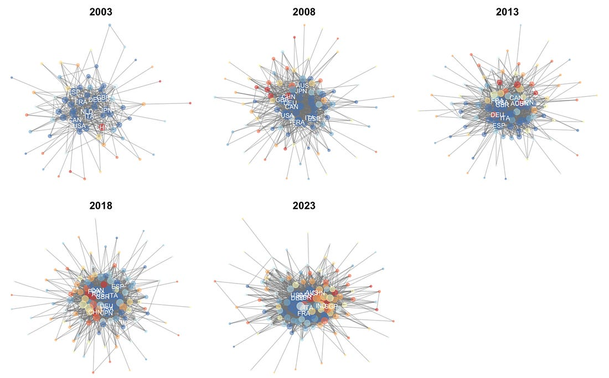
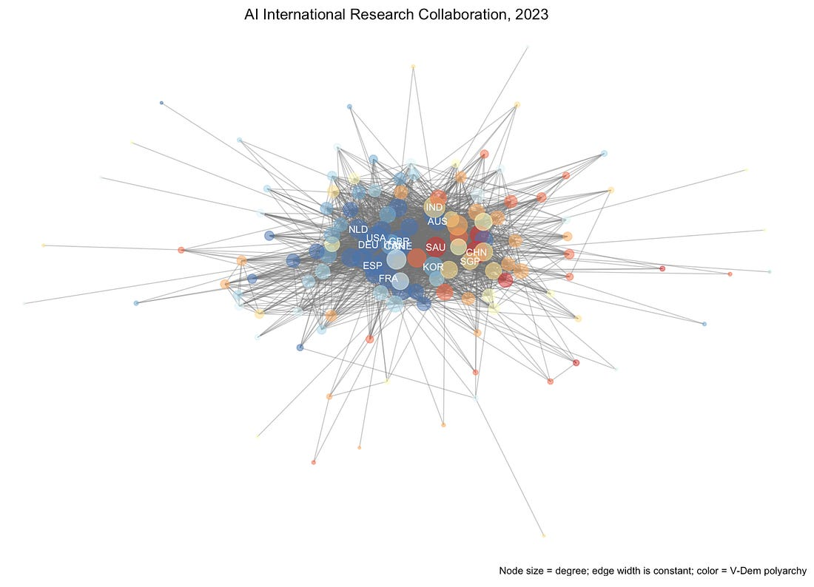

Emerging Spheres of Influence in Global Science
Bifurcation in AI Research Collaboration
Earlier this week, I delivered a workshop to a handful of young science and technology policy researchers from around the world at Georgia Tech's 2026 Atlanta Academy on Science and Innovation Policy. The topic of the workshop was network science for international research collaboration. I have published several papers on international collaboration in the past, documenting various properties, processes, antecedents, and consequences of collaboration between scientists across borders. Thanks to one of our Academy teams, delivering this workshop brought back into focus a pattern I had uncovered in earlier work but forgotten. The global system of science appears to be self-organizing into two spheres of influence roughly demarcated by democracies and autocracies.
It was not until recently that I decided to move toward serious investigation of the political determinants of the shape of the global network of collaboration. I started out seeking answers to research questions that I had long suspected to be true. Does democracy predict centrality in the global network of science? Does democracy predict scientific impact in the global system of science? The answers were easy enough to find given relatively recent advances in metrics for democracy, computational social science, and a strange lack of serious attention to such basic questions.
However, as I kept digging into longer stretches of time and more granular measures, such as the academic freedom index, I realized that the answers to these questions are becoming far more complicated as every new decade passes. The global system of science now seems to be reifying dual spheres of influence. On the one side of the network are assembled a large array of democratic countries, and on the other an emerging set of autocratic countries forming a coherent bloc. You can see this very clearly in the global science and technology research collaboration networks visualized below in my recent paper in Quantitative Science Studies.

In this figure, nodes are countries, which are blue to red depending on their Academic Freedom Index. The data only go to 2022 because the Web of Science records available to me at Georgia Tech have a two-year delay. Further testing with inferential network models showed that indeed, academic freedom is less and less of a predictor of tie formation in the global network (and, by direct implication, democracy). Increasingly, similarity on this index is a stronger predictor of tie formation. In other words, countries with low freedom are increasingly forming connections with each other and vice versa. In essence, we have a type of political sorting at the global level representing itself in networks of scientific research collaboration.
Back to the workshop. A group of students proposed to study the idea of spheres of influence in global science, and I immediately recalled the figure above. I then generated a visualization of the networks I had been preparing for the workshop. Since the unrelenting topic of the moment is artificial intelligence, I decided to pull the Web of Science data for international research collaboration in AI. Of course, AI is a domain of science that all countries, no matter how autocratic have an interest in developing, so I certainly did not expect democracy to be a strong driver, especially considering the ascendance of China in this space. As you can clearly see below, the same process affecting all of science and technology research collaborations is playing out at an even stronger level for AI.

In 2003 the Artificial Intelligence international research collaboration network is all but dominated by democratic countries. By 2023, the network almost looks like it is about to undergo cell division and split into two separate mega-clusters. Below is a closer look at 2023. In these figures I reverted to the V-Dem measure of 'polyarchy' rather than the Academic Freedom Index. Interestingly, we see countries like Saudi Arabia at the very center of the network, surrounded by others such as China, Singapore, and India, which has undergone a serious period of democratic backsliding in the last decade.

Again a variety of inferential models from exponential random graph models to stochastic actor oriented models all support the same conclusion. Now across many domains of science, similarity of political governance between countries is a stronger predictor of network evolution than a country's level of democracy alone. The network was once dominated by democratic countries. As the world undergoes waves of democratic backsliding, in artificial intelligence and many similar fields, it is now firmly split between countries of varying levels of democracy and autocracy aligned across different sides of the network.
While there remains substantial cross connection between countries along the polyarchy spectrum, the evolution of the network clearly shows a global shift toward competing spheres of influence across political lines. Given how current events have proceeded in the last few years, there is no reason to think this trend will slow and every reason to think it has accelerated. The potential costs of this bifurcation are massive.
Whatever you believe about the timeline to general AI, the "singularity", and all of its associated disruptions, good governance will depend on effective coordination. A fractured global research network makes global governance much harder. The shared technical vocabulary, the personal ties between researchers, the informal channels that let scientists flag concerns to counterparts in other countries, all of these things weaken as the network splits. We are heading toward a world where the capability to build advanced AI is distributed across two increasingly disconnected blocs, and the institutional substrate for governing it jointly is eroding.
For decades realists in international relations argued that unipolarity is unstable, and the rest of the world would eventually counterbalance against the sole superpower. For a while, the relative stability of the sole superpower and the wealth it created for the rest of the world were probably attractive enough to prevent the counterbalancing from happening. But things have since gone sideways. What the global science network shows is that counterbalancing is underway and has reached deep into technical domains once thought insulated from politics. The liberal internationalists, on the other hand, emphasized that international regimes enhance cooperation across borders and promote peace. To the realist, the peace is an illusion, and international regimes have simply enabled the transfer of science and technology to the other side. Which side will turn out to be correct remains to be seen.
Sources
- Whetsell, T. A., Sidorova, J., & Yang, J. J. (2025). Academic freedom and international research collaboration: A longitudinal analysis of global network evolution. Quantitative Science Studies, 6, 1163–1188. https://doi.org/10.1162/QSS.a.22
- Whetsell, T. A. (2023). Democratic governance and global science: A longitudinal analysis of the international research collaboration network. PLOS ONE, 18(6), e0287058. https://doi.org/10.1371/journal.pone.0287058